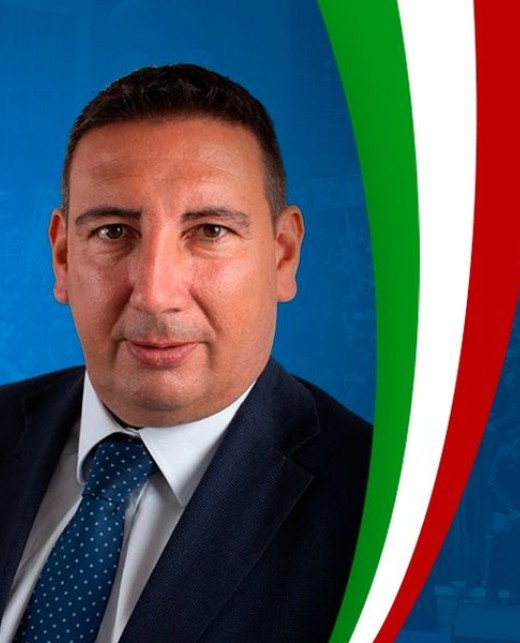
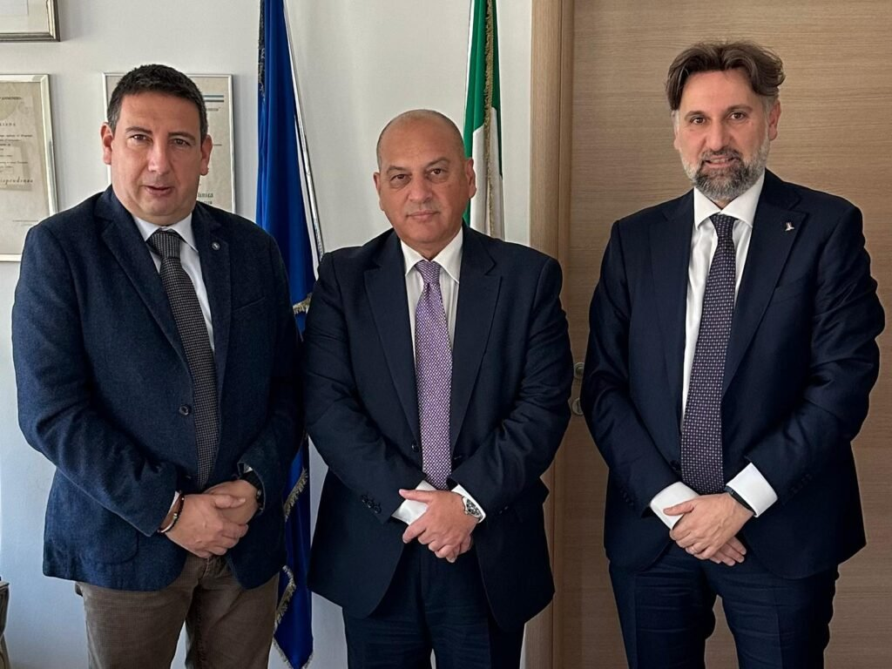

Etelwardo
Sigismondi
Senatore della Repubblica per il collegio Abruzzo, Capogruppo di Fratelli d'Italia in VIII Commissione permanente (Ambiente, transizione ecologica, energia, lavori pubblici, comunicazioni, innovazione tecnologica). Architetto, al servizio delle istituzioni da oltre venticinque anni.

L'Abruzzo in Parlamento
Architetto di formazione, attivo in politica dal 1998, tra i fondatori di Fratelli d'Italia in Abruzzo. Oggi rappresenta il collegio abruzzese al Senato della Repubblica dopo un lungo percorso nelle istituzioni locali e regionali.
Formazione
Architetto, laureato all'Università "G. D'Annunzio" di Chieti-Pescara. Attivo in politica dal 1998, tra Fronte della Gioventù e Azione Giovani.
Leggi la biografia →Percorso istituzionale
Consigliere comunale a Vasto e provinciale a Chieti, fondatore di Fratelli d'Italia in Abruzzo, capo della segreteria del Presidente Marco Marsilio, oggi Senatore.
Scopri il percorso →Impegno per il territorio
Giustizia di prossimità, infrastrutture, protezione civile e sicurezza: temi concreti seguiti con presenza costante sul collegio abruzzese.
Attività parlamentare →La memoria del sacrificio dei minatori italiani di Marcinelle merita di essere tramandata alle giovani generazioni. — Dichiarazione in Aula sul ddl Marcinelle, approvato all'unanimità dal Senato
Le priorità dell'impegno parlamentare
Energia e ambiente
Capogruppo nella Commissione che segue transizione ecologica ed energia: difesa dell'idroelettrico italiano, decarbonizzazione e indipendenza energetica.
Infrastrutture e sviluppo
Sostegno al DL Infrastrutture e all'estensione della ZES unica a tutto il territorio nazionale, per la competitività dell'Abruzzo e del Paese.
Giustizia di prossimità
La battaglia per i tribunali sub-provinciali abruzzesi, culminata nella firma del Governo per la loro salvezza definitiva.
Memoria e identità
Primo firmatario del ddl che dichiara monumento nazionale i luoghi di Manoppello dedicati alle vittime di Marcinelle.
Legalità e antimafia
Componente della Commissione parlamentare d'inchiesta sul fenomeno mafioso e sulle altre associazioni criminali.
Sicurezza e protezione civile
Vicinanza costante alle forze dell'ordine e agli operatori della Protezione Civile impegnati sul territorio abruzzese.
In evidenza
Marcinelle: primo ok unanime dal Senato al monumento nazionale
Agosto 2026 — AbruzzoWeb
Leggi la rassegna →La giustizia torna in Abruzzo: salvi i tribunali sub-provinciali
22 luglio 2025 — Comunicato ufficiale
Leggi la rassegna →
Protezione civile: visita a L'Aquila nel giorno di Ferragosto
16 agosto 2026 — Zonalocale
Leggi la rassegna →Documenti e dati pubblici
L'attività parlamentare è pubblica e verificabile: qui i collegamenti diretti alle fonti istituzionali.